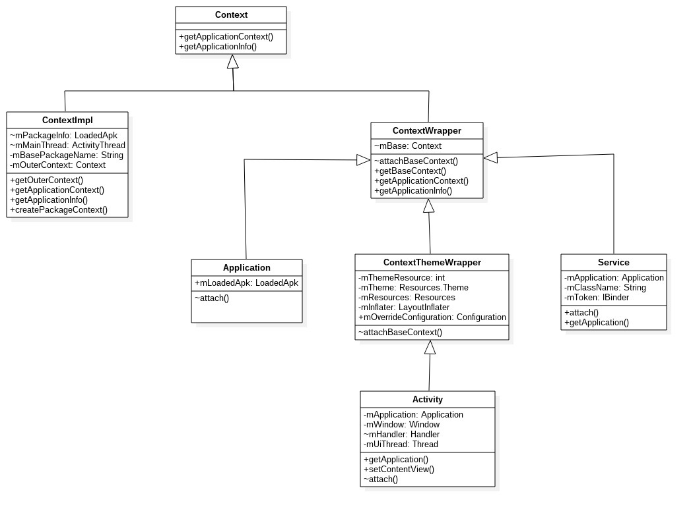

参考资料
我相信，即使是第一天接触Android的小伙伴，对这个词儿也并不陌生。在Android系统中，有大量的场景都离不开Context的身影。下面列举部分常见的场景：
我们发现，四大组件、各种资源操作、以及其他很多场景都离不开Context, 那么Context到底该如何来理解呢？“Context”翻译成中文的大意为：“环境；上下文”。我们知道，在Android系统中，framework层是使用Java语言来开发的，那么一个普通的Java程序和Android程序最大的不同是什么？划分界限又是什么呢？ 没错，其实就是这个Context！
简单点来说，Android程序不像Java程序一样，随便创建一个类，写个main()方法就能跑了，而是要有一个完整的Android工程环境，在这个环境下，我们有像Activity、Service、BroadcastReceiver等系统组件，而这些组件并不是像一个普通的Java对象new一下就能创建实例的，而是要有它们各自的上下文环境，也就是我们这里讨论的Context。可以这样讲，Context是维持Android程序中各组件能够正常工作的一个核心功能类。
首先，我们先来看一下Context的继承结构：

attach() 调用父类ContextWrapper的attachBaseContext(), 从而设置父类成员变量mBase为ContextImpl对象;getApplication(),可主动获取当前所在mApplication;LoadedApk.makeApplication()过程所初始化的;onReceive()的第一个参数指向通当前所在Application,也就是只有接收到广播的时候才能拿到当前的Application对象;getContext()可以获取当前的ContextImpl.
要理解Context, 需要依次来看看四大组件的初始化过程.
这个函数定义在文件frameworks/base/core/java/android/app/ActivityThread.java中 :
xxxxxxxxxxprivate Activity performLaunchActivity(ActivityClientRecord r, Intent customIntent) {...ActivityInfo aInfo = r.activityInfo;if (r.packageInfo == null) {//step 1: 创建LoadedApk对象r.packageInfo = getPackageInfo(aInfo.applicationInfo, r.compatInfo,Context.CONTEXT_INCLUDE_CODE);}... //component初始化过程java.lang.ClassLoader cl = r.packageInfo.getClassLoader();//step 2: 创建Activity对象Activity activity = mInstrumentation.newActivity(cl, component.getClassName(), r.intent);...//step 3: 创建Application对象Application app = r.packageInfo.makeApplication(false, mInstrumentation);if (activity != null) {//step 4: 创建ContextImpl对象Context appContext = createBaseContextForActivity(r, activity);CharSequence title = r.activityInfo.loadLabel(appContext.getPackageManager());Configuration config = new Configuration(mCompatConfiguration);//step5: 将Application/ContextImpl都attach到Activity对象 [见小节4.1]activity.attach(appContext, this, getInstrumentation(), r.token,r.ident, app, r.intent, r.activityInfo, title, r.parent,r.embeddedID, r.lastNonConfigurationInstances, config,r.referrer, r.voiceInteractor);...int theme = r.activityInfo.getThemeResource();if (theme != 0) {activity.setTheme(theme);}activity.mCalled = false;if (r.isPersistable()) {//step 6: 执行回调onCreatemInstrumentation.callActivityOnCreate(activity, r.state, r.persistentState);} else {mInstrumentation.callActivityOnCreate(activity, r.state);}r.activity = activity;r.stopped = true;if (!r.activity.mFinished) {activity.performStart(); //执行回调onStartr.stopped = false;}if (!r.activity.mFinished) {//执行回调onRestoreInstanceStateif (r.isPersistable()) {if (r.state != null || r.persistentState != null) {mInstrumentation.callActivityOnRestoreInstanceState(activity, r.state,r.persistentState);}} else if (r.state != null) {mInstrumentation.callActivityOnRestoreInstanceState(activity, r.state);}}...r.paused = true;mActivities.put(r.token, r);}return activity;}
startActivity()的过程最终会在目标进程执行performLaunchActivity()方法, 该方法主要功能:
onCreate()等回调;这个函数定义在文件frameworks/base/core/java/android/app/ActivityThread.java中 :
xxxxxxxxxxprivate void handleCreateService(CreateServiceData data) {...//step 1: 创建LoadedApkLoadedApk packageInfo = getPackageInfoNoCheck(data.info.applicationInfo, data.compatInfo);java.lang.ClassLoader cl = packageInfo.getClassLoader();//step 2: 创建Service对象service = (Service) cl.loadClass(data.info.name).newInstance();//step 3: 创建ContextImpl对象ContextImpl context = ContextImpl.createAppContext(this, packageInfo);context.setOuterContext(service);//step 4: 创建Application对象Application app = packageInfo.makeApplication(false, mInstrumentation);//step 5: 将Application/ContextImpl都attach到Service对象 [见小节4.2]service.attach(context, this, data.info.name, data.token, app,ActivityManagerNative.getDefault());//step 6: 执行onCreate回调service.onCreate();mServices.put(data.token, service);ActivityManagerNative.getDefault().serviceDoneExecuting(data.token, SERVICE_DONE_EXECUTING_ANON, 0, 0);...}
整个过程:
这个函数定义在文件frameworks/base/core/java/android/app/ActivityThread.java中 :
xxxxxxxxxxprivate void handleReceiver(ReceiverData data) {...String component = data.intent.getComponent().getClassName();//step 1: 创建LoadedApk对象LoadedApk packageInfo = getPackageInfoNoCheck(data.info.applicationInfo, data.compatInfo);IActivityManager mgr = ActivityManagerNative.getDefault();java.lang.ClassLoader cl = packageInfo.getClassLoader();data.intent.setExtrasClassLoader(cl);data.intent.prepareToEnterProcess();data.setExtrasClassLoader(cl);//step 2: 创建BroadcastReceiver对象BroadcastReceiver receiver = (BroadcastReceiver)cl.loadClass(component).newInstance();//step 3: 创建Application对象Application app = packageInfo.makeApplication(false, mInstrumentation);//step 4: 创建ContextImpl对象ContextImpl context = (ContextImpl)app.getBaseContext();sCurrentBroadcastIntent.set(data.intent);receiver.setPendingResult(data);//step 5: 执行onReceive回调 [见小节4.3]receiver.onReceive(context.getReceiverRestrictedContext(), data.intent);...}
整个过程:
onReceive()回调;特别说明:
onReceive()方法即可.这个函数定义在文件frameworks/base/core/java/android/app/ActivityThread.java中 :
xxxxxxxxxxprivate IActivityManager.ContentProviderHolder installProvider(Context context, IActivityManager.ContentProviderHolder holder, ProviderInfo info, boolean noisy, boolean noReleaseNeeded, boolean stable) {ContentProvider localProvider = null;IContentProvider provider;if (holder == null || holder.provider == null) {Context c = null;ApplicationInfo ai = info.applicationInfo;if (context.getPackageName().equals(ai.packageName)) {c = context;} else if (mInitialApplication != null &&mInitialApplication.getPackageName().equals(ai.packageName)) {c = mInitialApplication;} else {//step 1 && 2: 创建LoadedApk和ContextImpl对象c = context.createPackageContext(ai.packageName,Context.CONTEXT_INCLUDE_CODE);}final java.lang.ClassLoader cl = c.getClassLoader();//step 3: 创建ContentProvider对象localProvider = (ContentProvider)cl.loadClass(info.name).newInstance();provider = localProvider.getIContentProvider();//step 4: ContextImpl都attach到ContentProvider对象 [见小节4.4]//step 5: 并执行回调onCreatelocalProvider.attachInfo(c, info);} else {...}...return retHolder;}
该方法主要功能:
onCreate()回调;这个函数定义在文件frameworks/base/core/java/android/app/ActivityThread.java中 :
xxxxxxxxxxprivate void handleBindApplication(AppBindData data) {//step 1: 创建LoadedApk对象data.info = getPackageInfoNoCheck(data.appInfo, data.compatInfo);...//step 2: 创建ContextImpl对象;final ContextImpl appContext = ContextImpl.createAppContext(this, data.info);//step 3: 创建InstrumentationmInstrumentation = new Instrumentation();//step 4: 创建Application对象; [见小节3.2.1]Application app = data.info.makeApplication(data.restrictedBackupMode, null);mInitialApplication = app;//step 5: 安装providersList<ProviderInfo> providers = data.providers;installContentProviders(app, providers);//step 6: 执行Application.Create回调mInstrumentation.callApplicationOnCreate(app);}
该过程主要功能:
上面介绍了4大组件以及Application的初始化过程, 接下来再进一步说明其中LoadedApk, ContextImpl, Application的初始化过程.
这个函数定义在文件frameworks/base/core/java/android/app/ActivityThread.java中 :
xxxxxxxxxxpublic final LoadedApk getPackageInfo(ApplicationInfo ai, CompatibilityInfo compatInfo, int flags) {boolean includeCode = (flags&Context.CONTEXT_INCLUDE_CODE) != 0;//是否违反隐私问题boolean securityViolation = includeCode && ai.uid != 0&& ai.uid != Process.SYSTEM_UID && (mBoundApplication != null? !UserHandle.isSameApp(ai.uid, mBoundApplication.appInfo.uid): true);boolean registerPackage = includeCode && (flags&Context.CONTEXT_REGISTER_PACKAGE) != 0;...return getPackageInfo(ai, compatInfo, null, securityViolation, includeCode,registerPackage);}
当securityViolation=true,则代表违反隐私问题, 会抛出SecurityException异常.
这个函数定义在文件frameworks/base/core/java/android/app/ActivityThread.java中 :
xxxxxxxxxxprivate LoadedApk getPackageInfo(ApplicationInfo aInfo, CompatibilityInfo compatInfo, ClassLoader baseLoader, boolean securityViolation, boolean includeCode, boolean registerPackage) {final boolean differentUser = (UserHandle.myUserId() != UserHandle.getUserId(aInfo.uid));synchronized (mResourcesManager) {WeakReference<LoadedApk> ref;if (differentUser) {ref = null;} else if (includeCode) {ref = mPackages.get(aInfo.packageName); //从mPackages查询} else {...}LoadedApk packageInfo = ref != null ? ref.get() : null;if (packageInfo == null || (packageInfo.mResources != null&& !packageInfo.mResources.getAssets().isUpToDate())) {//创建LoadedApk对象, 此时baseLoader为nullpackageInfo = new LoadedApk(this, aInfo, compatInfo, baseLoader,securityViolation, includeCode &&(aInfo.flags&ApplicationInfo.FLAG_HAS_CODE) != 0, registerPackage);...if (differentUser) {...} else if (includeCode) {//将新创建的LoadedApk加入到mPackagesmPackages.put(aInfo.packageName, new WeakReference<LoadedApk>(packageInfo));} else {...}}return packageInfo;}}
该方法主要功能:
xxxxxxxxxxpublic final LoadedApk getPackageInfoNoCheck(ApplicationInfo ai, CompatibilityInfo compatInfo) {return getPackageInfo(ai, compatInfo, null, false, true, false);}
除了Activity的初始化, 其他组件初始化都是采用该方法,有默认参数值, 主要功能还是一致的.
有了LoadedApk对象, 接下来可以创建Application对象, 该对象一个Apk只会创建一次.
这个函数定义在文件frameworks/base/core/java/android/app/LoadedApk.java 中 :
xxxxxxxxxxpublic Application makeApplication(boolean forceDefaultAppClass, Instrumentation instrumentation) {//保证一个LoadedApk对象只创建一个对应的Application对象if (mApplication != null) {return mApplication;}String appClass = mApplicationInfo.className;if (forceDefaultAppClass || (appClass == null)) {appClass = "android.app.Application"; //设置应用类名}java.lang.ClassLoader cl = getClassLoader();if (!mPackageName.equals("android")) {initializeJavaContextClassLoader();}//创建ContextImpl对象ContextImpl appContext = ContextImpl.createAppContext(mActivityThread, this);//创建Application对象, 并将appContext attach到新创建的Application[见3.2.2]Application app = mActivityThread.mInstrumentation.newApplication(cl, appClass, appContext);appContext.setOuterContext(app);...mActivityThread.mAllApplications.add(app);mApplication = app; //将刚创建的app赋值给mApplication...return app;}
该方法主要功能:
获取当前应用的ClassLoader对象,根据是否为”android”来决定调用initializeJavaContextClassLoader()的过程;
根据当前ActivityThread对象来创建相应的ContextImpl对象
创建Application对象, 初始化其成员变量:
mBase指向新创建ContextImpl;
mLoadedApk指向当前所在的LoadedApk对象;
将新创建的Application对象保存到ContextImpl的成员变量mOuterContext.
关于initializeJavaContextClassLoader()的过程, 见文章理解Application初始化的[小节2.9].
关于应用类名采用的是Apk中声明的应用类名,即Manifest.xml中定义的类名. 有两种特殊情况会强制 设置应用类名为”android.app.Application”:
这个函数定义在文件frameworks/base/core/java/android/app/Instrumentation.java 中 :
xxxxxxxxxxstatic public Application newApplication(Class<?> clazz, Context context) throws InstantiationException, IllegalAccessException, ClassNotFoundException {Application app = (Application)clazz.newInstance(); //创建Applicationapp.attach(context); //执行attach操作[见小节4.3.5]return app;}
创建ContextImpl的方式有多种, 不同的组件初始化调用不同的方法,如下:
createBaseContextForActivity()初始化;[详见3.3.1]createAppContext()初始化;[详见3.3.2]createPackageContext()初始化;Application.getBaseContext()来获取ContextImpl对象;这个函数定义在文件frameworks/base/core/java/android/app/ActivityThread.java中 :
xxxxxxxxxxprivate Context createBaseContextForActivity(ActivityClientRecord r, final Activity activity) {int displayId = Display.DEFAULT_DISPLAY;try {displayId = ActivityManagerNative.getDefault().getActivityDisplayId(r.token);} catch (RemoteException e) {throw e.rethrowFromSystemServer();}//创建ContextImpl对象ContextImpl appContext = ContextImpl.createActivityContext(this, r.packageInfo, displayId, r.overrideConfig);appContext.setOuterContext(activity);Context baseContext = appContext;...return baseContext;}
这个函数定义在文件frameworks/base/core/java/android/app/ContextImpl.java 中 :
xxxxxxxxxxstatic ContextImpl createActivityContext(ActivityThread mainThread, LoadedApk packageInfo, int displayId, Configuration overrideConfiguration) {return new ContextImpl(null, mainThread, packageInfo,null, null, false,null, overrideConfiguration, displayId);}
Activity采用该方法来初始化ContextImpl对象.
这个函数定义在文件frameworks/base/core/java/android/app/ContextImpl.java 中 :
xxxxxxxxxxstatic ContextImpl createAppContext(ActivityThread mainThread, LoadedApk packageInfo) {if (packageInfo == null) throw new IllegalArgumentException("packageInfo");return new ContextImpl(null, mainThread, packageInfo,null, null, false,null, null, Display.INVALID_DISPLAY);}
Service/Application采用该方法来初始化ContextImpl对象.
这个函数定义在文件frameworks/base/core/java/android/app/ContextImpl.java 中 :
xpublic Context createPackageContext(String packageName, int flags) throws NameNotFoundException {return createPackageContextAsUser(packageName, flags,mUser != null ? mUser : Process.myUserHandle());}public Context createPackageContextAsUser(String packageName, int flags, UserHandle user) throws NameNotFoundException {final boolean restricted = (flags & CONTEXT_RESTRICTED) == CONTEXT_RESTRICTED;if (packageName.equals("system") || packageName.equals("android")) {return new ContextImpl(this, mMainThread, mPackageInfo, mActivityToken,user, restricted, mDisplay, null, Display.INVALID_DISPLAY);}//创建LoadedApkLoadedApk pi = mMainThread.getPackageInfo(packageName, mResources.getCompatibilityInfo(),flags | CONTEXT_REGISTER_PACKAGE, user.getIdentifier());if (pi != null) {//创建ContextImplContextImpl c = new ContextImpl(this, mMainThread, pi,mActivityToken,user, restricted, mDisplay, null, Display.INVALID_DISPLAY);if (c.mResources != null) {return c;}}}
ContentProvider采用该方法来初始化ContextImpl对象.
这个类定义在文件frameworks/base/core/java/android/app/ContextImpl.java 中 :
xxxxxxxxxxclass ContextImpl extends Context {final ActivityThread mMainThread;final LoadedApk mPackageInfo;private final IBinder mActivityToken;private final String mBasePackageName;private Context mOuterContext;//缓存Binder服务final Object[] mServiceCache = SystemServiceRegistry.createServiceCache();private ContextImpl(ContextImpl container, ActivityThread mainThread, LoadedApk packageInfo, IBinder activityToken, UserHandle user, boolean restricted, Display display, Configuration overrideConfiguration, int createDisplayWithId) {mOuterContext = this; //ContextImpl对象mMainThread = mainThread; // ActivityThread赋值mPackageInfo = packageInfo; // LoadedApk赋值mBasePackageName = packageInfo.mPackageName; //mBasePackageName等于“android”...}}
这个函数定义在文件frameworks/base/core/java/android/app/Activity.java 中 :
xxxxxxxxxxfinal void attach(Context context, ActivityThread aThread, Instrumentation instr, IBinder token, int ident, Application application, Intent intent, ActivityInfo info, CharSequence title, Activity parent, String id, NonConfigurationInstances lastNonConfigurationInstances, Configuration config, String referrer, IVoiceInteractor voiceInteractor) {attachBaseContext(context); //调用父类方法设置mBase.mUiThread = Thread.currentThread();mMainThread = aThread;mApplication = application;mIntent = intent;mComponent = intent.getComponent();mActivityInfo = info;...}
将新创建的ContextImpl赋值到父类ContextWrapper.mBase变量.
这个函数定义在文件frameworks/base/core/java/android/app/Service.java 中 :
xxxxxxxxxxpublic final void attach( Context context, ActivityThread thread, String className, IBinder token, Application application, Object activityManager) {attachBaseContext(context); //调用父类方法设置mBase.mClassName = className;mToken = token;mApplication = application;...}
将新创建的ContextImpl赋值到父类ContextWrapper.mBase变量.
这个函数定义在文件frameworks/base/core/java/android/app/ContextImpl .java 中 :
xxxxxxxxxxfinal Context getReceiverRestrictedContext() {if (mReceiverRestrictedContext != null) {return mReceiverRestrictedContext;}return mReceiverRestrictedContext = new ReceiverRestrictedContext(getOuterContext());}
对于广播来说Context的传递过程, 跟其他组件完全不同. 广播是在onReceive()过程通过参数将ReceiverRestrictedContext传递过去的. 此处getOuterContext()返回的是ContextImpl对象.
这个函数定义在文件frameworks/base/core/java/android/content/ContentProvider.java 中 :
xxxxxxxxxxpublic void attachInfo(Context context, ProviderInfo info) {attachInfo(context, info, false);}private void attachInfo(Context context, ProviderInfo info, boolean testing) {mNoPerms = testing;if (mContext == null) {//将新创建ContextImpl对象保存到ContentProvider对象的成员变量mContextmContext = context;...if (info != null) {setReadPermission(info.readPermission);setWritePermission(info.writePermission);setPathPermissions(info.pathPermissions);mExported = info.exported;mSingleUser = (info.flags & ProviderInfo.FLAG_SINGLE_USER) != 0;setAuthorities(info.authority);}// 执行onCreate回调;ContentProvider.this.onCreate();}}
该方法主要功能:
getContext()获取该ContextImpl;onCreate()回调;这个函数定义在文件frameworks/base/core/java/android/app/Application.java 中 :
xxxxxxxxxxfinal void attach(Context context) {attachBaseContext(context); //Application的mBasemLoadedApk = ContextImpl.getImpl(context).mPackageInfo;}
该方法主要功能:
再来说说Context相关的几个核心方法:
| 对象 | 方法 | 返回值类型 | 含义 |
|---|---|---|---|
| Activity | getApplication() | Application | 获取Activity所属的mApplication |
| Service | getApplication() | Application | 获取Service所属的mApplication |
| ContextWrapper | getBaseContext | ContextImpl | 获取mBase,即ContextImpl |
| ContextWrapper | getApplicationContext | Application | 见小节4.6.1 |
| ContextImpl | getApplicationContext | Application | 见小节4.6.1 |
| ContextImpl | getOuterContext | ContextImpl | 获取mOuterContext |
| ContextImpl | getApplicationInfo | ApplicationInfo | mPackageInfo.mApplicationInfo |
makeApplication() 过程创建, 由 [小节4.1]赋值;makeApplication() 过程创建, 由 [小节4.2]赋值;onReceive()的第一个参数指向当前所在Application;ContextImpl的mOuterContext,默认值是由[小节3.3.4]ContextImpl初始化过程创建. 但往往通过调用setOuterContext()使其指向外部的Context;
makeApplication()过程, mOuterContext指向Application;handleCreateService()过程, mOuterContext指向Service;performLaunchActivity()的createBaseContextForActivity()过程, mOuterContext指向Activity;这个函数定义在文件frameworks/base/core/java/android/app/ContextImpl.java 中 :
xxxxxxxxxxclass ContextImpl extends Context {public Context getApplicationContext() {return (mPackageInfo != null) ?mPackageInfo.getApplication() : mMainThread.getApplication();}}//上述mPackageInfo的数据类型为LoadedApkpublic final class LoadedApk {Application getApplication() {return mApplication;}}//上述mMainThread为ActivityThreadpublic final class ActivityThread {public Application getApplication() {return mInitialApplication;}}
mPackageInfo.getApplication(): 返回的是LoadedApk.mApplication
makeApplication()完成; 但对于同一个apk只会执行一次;mMainThread.getApplication(): 返回的是ActivityThread.mInitialApplication
ActivityThread.handleBindApplication()赋值;AT.attach()赋值;下面用一幅图来看看核心组件的初始化过程会创建哪些对象:
| 类型 | LoadedApk | ContextImpl | Application | 创建相应对象 | 回调方法 |
|---|---|---|---|---|---|
| Activity | √ | √ | √ | Activity | onCreate |
| Service | √ | √ | √ | Service | onCreate |
| Receiver | √ | √ | √ | BroadcastReceiver | onReceive |
| Provider | √ | √ | × | ContentProvider | onCreate |
| Application | √ | √ | √ | Application | onCreate |
每个Apk都对应唯一的application对象和LoadedApk对象, 当Apk中任意组件的创建过程中, 当其所对应的的LoadedApk和Application没有初始化则会创建, 且只会创建一次.
另外大家会注意到唯有Provider在初始化过程并不会去创建所相应的Application对象.也就意味着当有多个Apk运行在同一个进程的情况下, 第二个apk通过Provider初始化过程再调用getContext().getApplicationContext()返回的并非Application对象, 而是NULL. 这里要注意会抛出空指针异常.
attachBaseContext()将新创建ContextImpl赋值到父类ContextWrapper.mBase变量;getBaseContext()获取该ContextImpl;attachBaseContext() 将新创建ContextImpl赋值到父类ContextWrapper.mBase变量;getBaseContext()获取该ContextImpl;getApplication()获取其所在的Application对象;attachInfo()将新创建ContextImpl保存到ContentProvider.mContext变量;getContext()获取该ContextImpl;onReceive()过程通过参数将ReceiverRestrictedContext传递过去的.getApplicationContext()获取Application;| 类型 | startActivity | startService | bindService | sendBroadcast | registerReceiver | getContentResolver |
|---|---|---|---|---|---|---|
| Activity | √ | √ | √ | √ | √ | √ |
| Service | - | √ | √ | √ | √ | √ |
| Receiver | - | √ | × | √ | - | √ |
| Provider | - | √ | √ | √ | √ | √ |
| Application | - | √ | √ | √ | √ | √ |
说明: (图中第一列代表不同的Context, "√" 代表允许在该Context执行相应的操作; "×" 代表不允许; "-" 代表分情况讨论)
不允许执行bindService()操作, 由于限制性上下文(ReceiverRestrictedContext)所决定的,会直接抛出异常.关于ReceiverRestricatedContext类的描述，详见附录；
registerReceiver()是否允许取决于receiver;
registerReceiver();startActivity()操作绝大多数情况下, getApplication()和getApplicationContext()这两个方法完全一致, 返回值也相同; 那么两者到底有什么区别呢?
getApplicationContext()这个的存在是Android历史原因. 我们都知道getApplication()只存在于Activity和Service对象; 那么对于BroadcastReceiver和ContentProvider却无法获取Application, 这时就需要一个能在Context上下文直接使用的方法, 那便是getApplicationContext().
两者对比:
getApplication()和getApplicationContext()的返回值完全相同; 除非厂商修改过接口;onReceive()的过程, 能使用getBaseContext().getApplicationContext()获取所在Application, 而无法使用getApplication();getContext().getApplicationContext()获取所在Application. 绝大多数情况下没有问题, 但是有可能会出现空指针的问题, 情况如下:当同一个进程有多个apk的情况下, 对于第二个apk是由provider方式拉起的, 前面介绍过provider创建过程并不会初始化所在application, 此时执行 getContext().getApplicationContext()返回的结果便是NULL. 所以对于这种情况要做好判空.
如果对于Application理解不够深刻, 建议getApplicationContext()方法谨慎使用, 做好是否为空的判定,防止出现空指针异常.
这个类定义在文件frameworks/base/core/java/android/app/ContextImpl.java 中 :
xclass ReceiverRestrictedContext extends ContextWrapper {ReceiverRestrictedContext(Context base) {super(base);}@Overridepublic Intent registerReceiver(BroadcastReceiver receiver, IntentFilter filter) {return registerReceiver(receiver, filter, null, null);}@Overridepublic Intent registerReceiver(BroadcastReceiver receiver, IntentFilter filter,String broadcastPermission, Handler scheduler) {/** registerReceiver()是否允许取决于receiver是否为空;* 当receiver == null用于获取sticky广播,* 允许使用;否则不允许使用registerReceiver();*/if (receiver == null) {// Allow retrieving current sticky broadcast; this is safe since we// aren't actually registering a receiver.return super.registerReceiver(null, filter, broadcastPermission, scheduler);} else {throw new ReceiverCallNotAllowedException("BroadcastReceiver components are not allowed to register to receive intents");}}@Overridepublic Intent registerReceiverAsUser(BroadcastReceiver receiver, UserHandle user,IntentFilter filter, String broadcastPermission, Handler scheduler) {if (receiver == null) {// Allow retrieving current sticky broadcast; this is safe since we// aren't actually registering a receiver.return super.registerReceiverAsUser(null, user, filter, broadcastPermission, scheduler);} else {throw new ReceiverCallNotAllowedException("BroadcastReceiver components are not allowed to register to receive intents");}}@Overridepublic boolean bindService(Intent service, ServiceConnection conn, int flags) {// 由此可以看出在BroadcastReceiver的onReceive（）方法中执行bindService（）操作会抛出异常！throw new ReceiverCallNotAllowedException("BroadcastReceiver components are not allowed to bind to services");}}